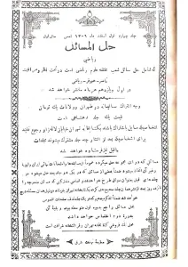
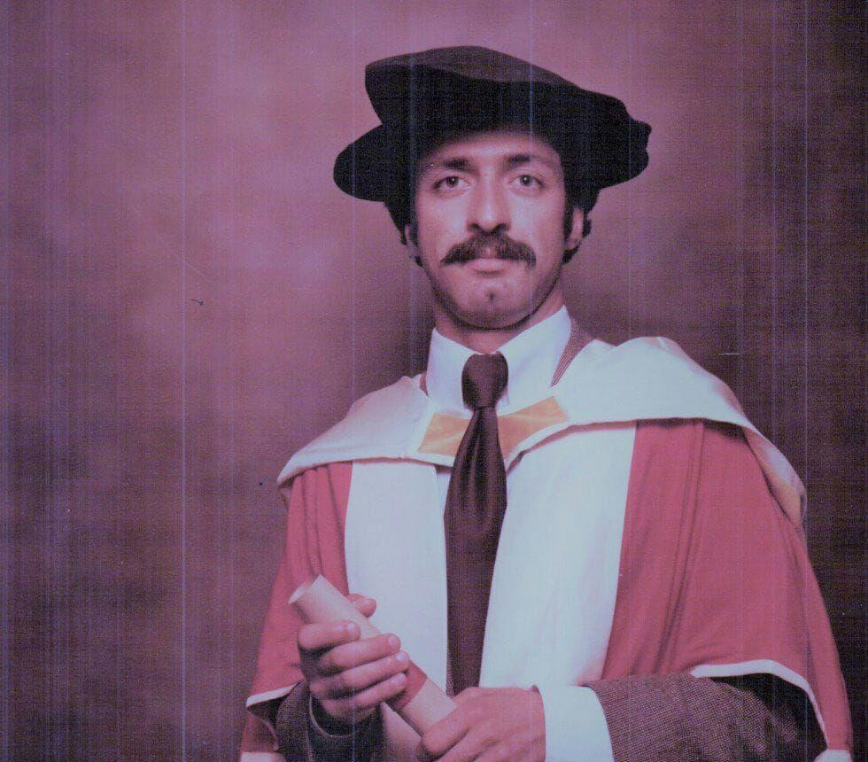
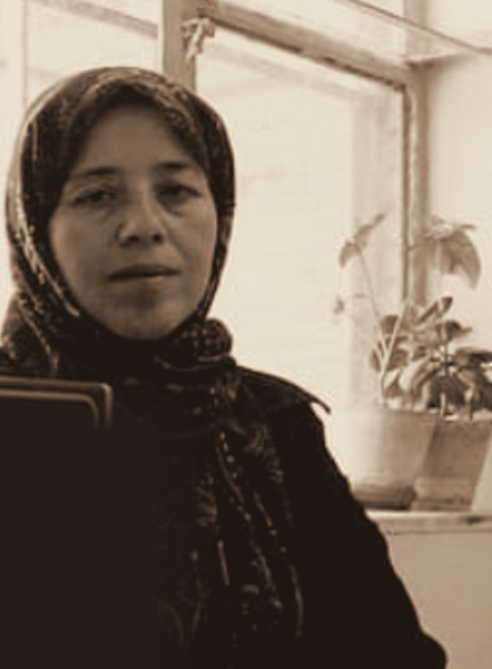
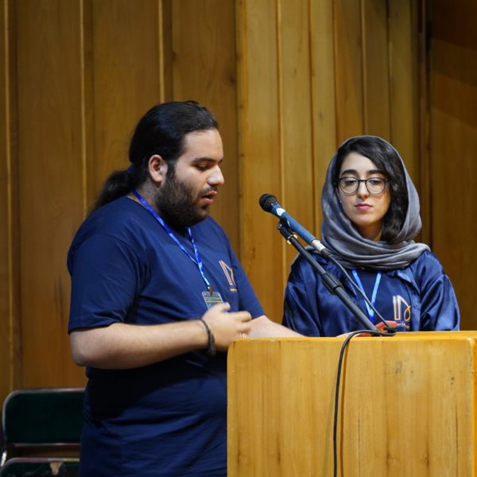
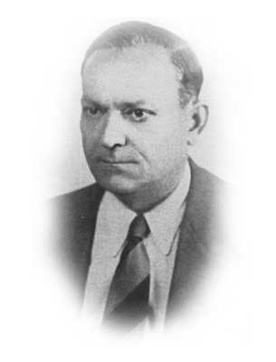
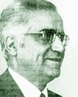

In 1815 Abbas Mirza sent five young men to England to bring back science and industry, and Mirza Jafar Khan was one of them. He studied there for four years, returned in 1819, and in Tabriz set up the Mohandes-khaneh, a school of engineering, where he taught mathematics. Four years later the state needed his politics more than his mathematics, and he spent the rest of his career in government, trusted by Amir Kabir.
Those four years in Tabriz produced the first arithmetic textbook in Iran in the modern sense. Written for the young Mohammad Mirza and dated 1845, six years before Dar al-Funun opened, his arithmetic was the first book written with a learner in mind. It has exercises, and in his book subtraction is treated as distance as well as taking away. Dar al-Funun does not seem to have used it, and mathematics teaching there started again without it.
Who is Mirza Jafar Khan Moshir-od-Dowleh? Amir Asghari (in Persian) →Mathematics at Dar al-Funun passed from teacher to student: from Mulla Ali Mohammad Isfahani and his son Najm-od-Dowleh to the graduates who later taught there, and through them to schools beyond it.
One of the first Iranian teachers of Dar al-Funun, and the father of Najm-od-Dowleh. His surviving work, Takmilat al-Oyun, dealt with approximate solutions of cubic equations by progressively narrowing intervals containing the root.
One of the central mathematical figures of Dar al-Funun, where the school’s mathematical authority rested with him. His algebra, Bedayat al-Jabr, chose a form of mathematical writing that connected Iranian learners to international mathematics. Through him, the work of his father, Mulla Ali Mohammad Isfahani, on cubic equations entered Dar al-Funun teaching.
A top graduate of the engineering class in Dar al-Funun’s second cohort. He went to France with Naser al-Din Shah in 1873 and attended classes at the École Polytechnique, among them those of Joseph Bertrand. Back at Dar al-Funun from 1875, he taught mathematics and physics in the artillery section and wrote the first authored physics textbook in Persian.
His arithmetic, Hesab-e Ali Khan (1879), became the most geographically widespread mathematics textbook in the modern history of Iran. It gave priority to meaning: a fraction is a number for measuring a given quantity by a known unit. He died in 1899, without seeing the book’s success.
Born in Tabriz, he graduated from Dar al-Funun and by 1899–1900 was teaching mathematics there. He remained a teacher and textbook author all his life. A student of Najm-od-Dowleh and a teacher of Ahmad Birashk, he carried Dar al-Funun mathematics into the wider world of Iranian schooling.
His geometry was a main teaching text for about two decades, until Birashk’s replaced it in 1936–37, and his Hall al-Masa’el al-Jabriyeh (1905) is a rare window onto the algebra Najm-od-Dowleh taught. He is often confused with Mirza Nezam Mohandes-ol-Mamalek, who never taught at Dar al-Funun.
Born in Kashan in 1844 and sent to France while still very young, he published his first mathematical article in French in 1864 and entered the École Polytechnique in 1865 as the top incoming student. He returned to Iran in 1867 and moved through state roles: translator, tutor to Naser al-Din Shah, road engineer, minister. He never taught at Dar al-Funun.
Meanwhile he wrote a large body of mathematics: the calculus of variations, algebra, calculus, trigonometry, mechanics, projective and descriptive geometry, determinants. He also designed a Persianized notation, with numbers written right to left and algebraic symbols drawn from Persian letters. No community ever wrote it with him, and his books became inaccessible even within Iran. He created a mathematical language that only he truly spoke.
In Maryam Ardalan’s time a complete secondary education was almost out of reach for Iranian girls. Boys had six years of primary school and six of secondary. The few girls’ schools offered only the first three secondary years, meant to make better mothers or, for women who did not marry, to give them a way to earn a living. A full girls’ high school course spread only after January 1936, and even then mathematics in girls’ schools was taught by men, because there were no women mathematics teachers.
One exception was the American Girls’ School in Tehran, opened by Christian missionaries in 1874. It took foreign girls first, then Iranian Christians, then Zoroastrian and Jewish girls, and from 1896 Muslim girls, though few Muslim families let their daughters attend. Maryam Ardalan, born in Tehran in 1892, entered in 1901. On 9 June 1911, aged eighteen, she was one of only two Iranian Muslim girls to graduate, the other being Mehrtaj Rakhshan. Her graduation speech was titled “The freedom of women”. Because of her gift for mathematics, the school took her on as its mathematics teacher straight away.
Her life followed that speech. Stranded in Sanandaj by the First World War, she turned her house into a school for women. Offered the headship of a private boys’ school, she asked instead for a state school for girls, so that her work would outlast her stay. It opened in 1926, and she named it after the poet Mastoureh Ardalan rather than herself. In 1938, when a foreign director was proposed for Iran’s first girls’ technical school, she was appointed instead. She died in 1966.
She left her autobiography with the Women’s Organization of Iran, and parts of it survive in Fakhri Qavimi’s Karnameh-ye Zanan-e Mashhur-e Iran (1973). Decades later her granddaughter, Parvin Ardalan, was among the founding members of the One Million Signatures Campaign, launched in 2006 to change laws that discriminate against women in Iran.
Born in Tonekabon in 1893, he went to primary school in Babol and came to Tehran to study at Dar al-Funun. In 1910 he was sent to France with the other government-sponsored students, and after four years in Paris returned to Iran in 1914. From 1916 he taught mathematics at Dar al-Funun, the military school, the Elmiyeh school and the teachers’ college.
In 1925 he joined the Ministry of Education’s textbook commission; from 1929 to 1937 he sat on the Supreme Council of Education, and in 1938 became a director-general of the ministry. In 1940, when the ministry bought the American college of Alborz, he became the first Iranian principal of Alborz High School. In 1943 he rose to deputy and then acting minister of education, yet he did not give up his class. One of his students recalled:
Even in that post, he always arrived on time to teach. I remember that on cold winter days, when few senior officials would leave home for their offices, our maths class of thirty or forty, which he taught, was never cancelled. He was never late and never absent.
He later served as deputy minister of agriculture and again as deputy minister of education, retired in 1952, and died in London on 6 December 1957.
His book, Elementary Principles of Algebra (Osul-e Elm-e Jabr va Moqabeleh-ye Moqaddamati), appeared in 1921 for the second and third years of secondary school, only a few years after Iran’s first final secondary examinations (1913). Later volumes made it a complete course in algebra, and it stayed in Iran’s schools for years. The book gives reasons for everything it presents, in language suited to students; but Vahid’s real art lies in the choice and design of its problems and exercises.

First published in January 1928 (1306 in the Iranian calendar), it is probably Iran’s first mathematics magazine with general distribution. Iran’s high schools were growing in number, and each issue printed problems from Iran’s final examinations and from mathematics examinations and competitions in Europe, with the promise of their solutions an issue or two later. The magazine ran for about a year.
The cover reads “Naser – Hoorfar – Riazi”: not one person, but three teachers.
- Ali-Asghar Naser, later governor of Bank Melli Iran, whose signature appeared on Iran’s banknotes.
- Hossein Hoorfar, later one of the most prolific authors of Iran’s first official school mathematics textbooks.
- Abdollah Riazi, then twenty-one, later dean of the Faculty of Engineering at the University of Tehran and Speaker of the National Consultative Assembly.
In 1935, the admission of women to the Higher Teachers’ College opened a new chapter in the history of mathematics in Iran. Within only a few years, the first generation of Iranian women to graduate in mathematics began to emerge.
From 1939 to 1942, four women graduated in mathematics in four consecutive years: Batol Homayoun in 1939, Mahpareh Mamagani in 1940, Mahin Sang in 1941, and Ghamar Ghamkhar in 1942.
They studied during a transitional period in Iranian higher education. Mathematics was still closely connected to the older system of teacher training, while the newly established University of Tehran and its Faculty of Science were taking shape. Soon afterwards, mathematics would be studied more clearly within the Faculty of Science. These four women therefore stand between two institutional eras—and together mark the beginning of women’s sustained presence in higher mathematics in Iran.
Born in 1927, he went to primary school in Qazvin and to Alborz High School in Tehran. At sixteen he wrote a geometry notebook, dated 1943, and dedicated it to the culture of Iran. He then went to France and studied there up to his doctorate, always with his wife, Araks Papazian.
In 1962 he was invited back for the academic year in which the mathematics department of the National University of Iran was founded, and he became its first head. In his two years in Tehran he wrote, in Persian, An Introduction to Modern Analysis. In 1963 it won the Royal Book of the Year prize, one of only six pure-science books to receive it between 1953 and 1979. Many of Iran’s future mathematicians first met modern mathematics through his book.
His contract was to last as long as Ali Sheikh-ol-Eslam was president of the university, and talk of Sheikh-ol-Eslam’s removal had already begun when, in 1964, the year Araks’s mother died, he and his family moved to France. On 28 November 1964 he wrote from Strasbourg to the magazine Yekan to make his resignation public. The mathematics department of the National University had been dissolved without consulting him or informing him, though he was still its head, so he considered his presence on its teaching staff superfluous and, despite the financial loss, announced the cancellation of his contract.
He never returned. He spent the rest of his life in mathematics in Strasbourg, and painted under the name Azik.
Who is Vazgen Avanessian? Amir Asghari (in Persian) →




People and Mathematics is free to read. Your support helps us find forgotten lives, photographs, documents, and stories from the history of mathematics in Iran, and make them openly available in Persian and English.
A donation helps turn scattered traces into histories that will not be lost.